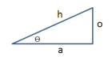
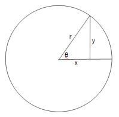

Looking at the figure above, point P is on the circle at a fixed distance r (the radius) from the center. The point P subtends an angle t to the positive x-axis. Click 'reset' and note this angle initially has a measure of 40°.
Using trigonometry, we can find the coordinates of P from the right triangle shown. In this triangle the radius r is the hypotenuse.
The x coordinate is therefore r cos(t) and the y coordinate is r sin(t)

To see why this is, recall that in a right triangle, the sine of an angle is the opposite side divided by the hypotenuse. In the figure on the rightIn the applet above, the side opposite t has a length of y, the y coordinate of P. The hypotenuse is the radius r. Therefore Multiply both sides by r
By similar means we find that
From the above we can find the coordinates of any point on the circle if we know the radius and the subtended angle. So in general we can say that a circle centered at the origin, with radius r, is the locus of all points that satisfy the equations
It also follows that any point not on the circle does not satisfy this pair of equations.
If we have a circle of radius 20 with its center at the origin, the circle can be described by the pair of equations
Then we just add or subtract fixed amounts to the x and y coordinates. If we let h and k be the coordinates of the center of the circle, we simply add them to the x and y coordinates in the equations, which then become:
In the above equations, the angle t (theta) is called a 'parameter'. This is a variable that appears in a system of equations that can take on any value (unless limited explicitly) but has the same value everywhere it appears. A parameter values are not plotted on an axis.
This form of defining a circle is very useful in computer algorithms that draw circles and ellipses. In fact, all the circles and ellipses in the applets on this site are drawn using this equation form. For more on this see An Algorithm for Drawing Circles.
Using the Pythagorean Theorem to solve the triangle in the figure above we get the more common form of the equation of a circle
For more see Basic equation of a circle and General equation of a circle.
To demonstrate that these forms are equivalent, consider the figure below.

In the interest of clarity in the applet above, the coordinates are rounded off to integers and the lengths rounded to one decimal place. This can cause calculatioons to be slightly off.
For more see Teaching Notes